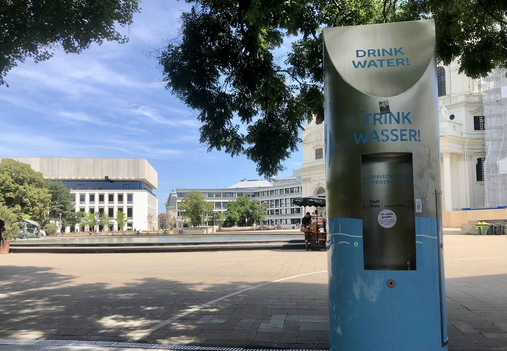
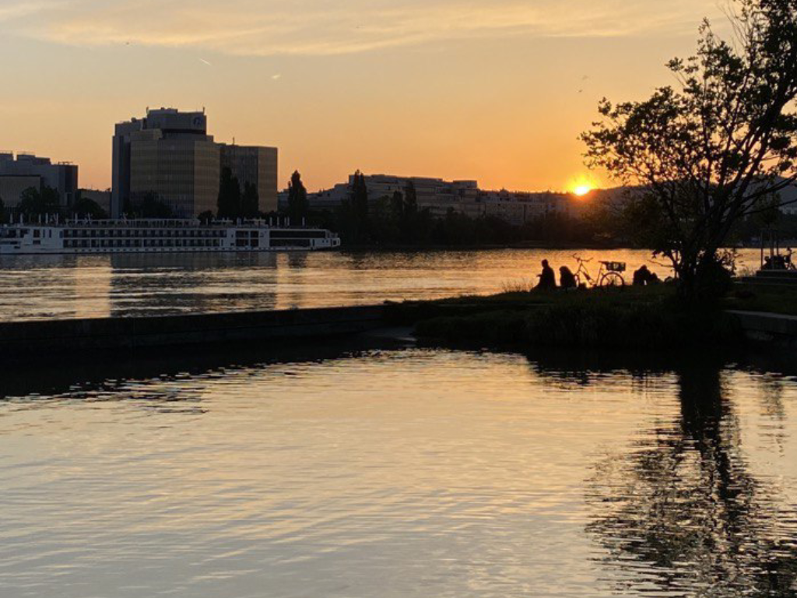
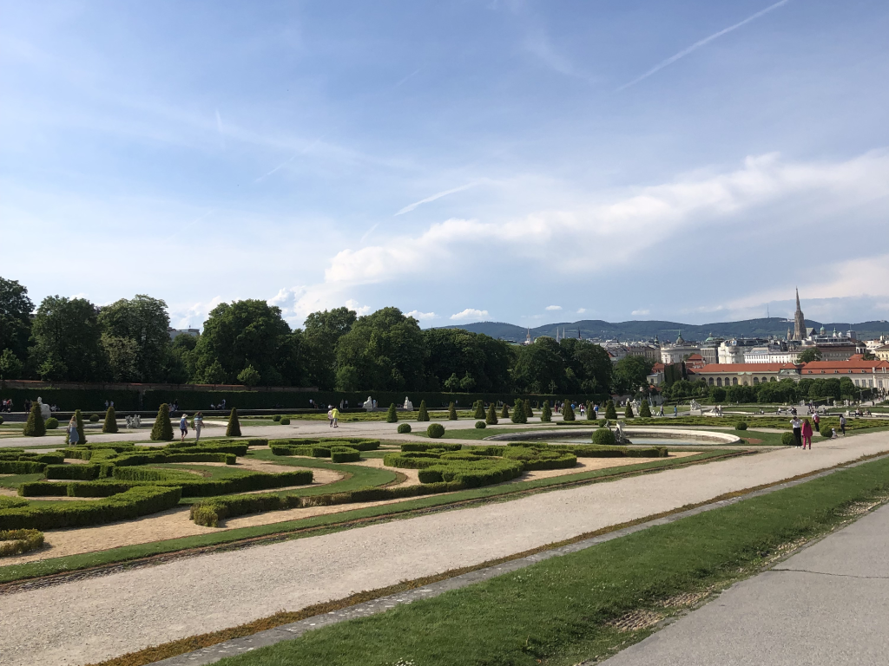
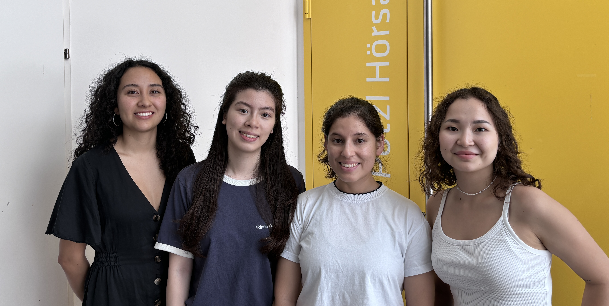

Viennese Summer
Enjoy your summer in Vienna
Vienna, with its rich history and vibrant culture, transforms into a playground of outdoor fun and excitement during the summer months. Our website is your ultimate guide to exploring all the fantastic activities the city has to offer. Whether you're a local looking for new adventures or a visitor wanting to experience the best of Vienna, we've got you covered.
MAP CONTENT

Hiking trails
Explore Vienna's scenic hiking trails, featuring picturesque paths highlighted on our map. These trails wind through Vienna's green spaces, offering opportunities to explore nature and enjoy panoramic views of the city. Whether you're a seasoned hiker or looking for a leisurely walk, Vienna's hiking trails cater to all levels of outdoor enthusiasts, providing a refreshing escape into the city's natural beauty.

Historical Gardens
Explore Vienna's enchanting historical gardens, featuring lush greenery and centuries-old designs. From Baroque landscapes to Renaissance courtyards, these gardens reveal Vienna's rich history and architectural beauty. Perfect for tranquil strolls and immersing yourself in the city's cultural heritage amid natural splendor.

Outdoor Sport Facilities
Discover Vienna's outdoor sport facilities, ideal for active pursuits under the summer sun. From expansive parks with jogging trails to sports fields for soccer and volleyball, Vienna offers a variety of spaces for fitness and recreation. Enjoy outdoor workouts or friendly matches with friends and family, embracing the city's vibrant outdoor sports scene amidst its scenic surroundings.

Rundumadum Hiking Trail
Experience the Rundumadum hiking trail, circling Vienna through green belts, parks, and forests. This extensive route offers diverse landscapes and stunning views, perfect for both avid hikers and casual walkers. Explore Vienna's natural beauty at your own pace, enjoying the city's rich biodiversity and scenic charm.
USER GUIDE
On this map, you can explore a variety of water points and outdoor free activities to keep you refreshed during the summer. Use the following instructions to navigate the map:
1. Zoom In/Out: Use the zoom controls or scroll with your mouse to get a closer or broader view.
2. Click on Icons: Click on specific icons to see detailed information, including names and additional details from each spot.
3. Use the Search Bar: Utilize the search bar to find specific water points or activities quickly closer to your location.
4. Filter Options: Apply filters to narrow down the types of spots you are interested in.
MAP
OUTDOOR ACTIVITIES

 Multisport
Court
Multisport
Court
WATER
SPOTS
SWIMMING

Swimming
HIKING

Hiking Rundumadum
 Hiking Trail
PARKS

Historical Gardens
TEAM
CONTACT
Any suggestion?
Phone: +49 202403010630
Email: viennese.summer@gmail.com